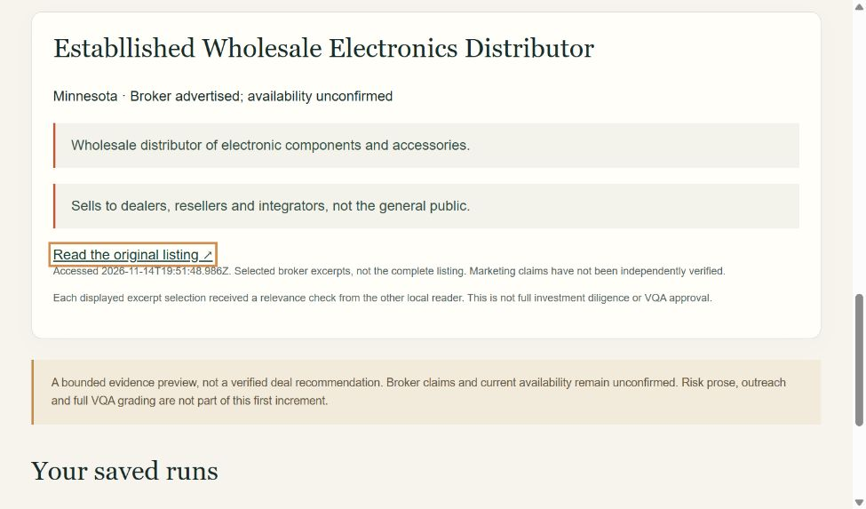
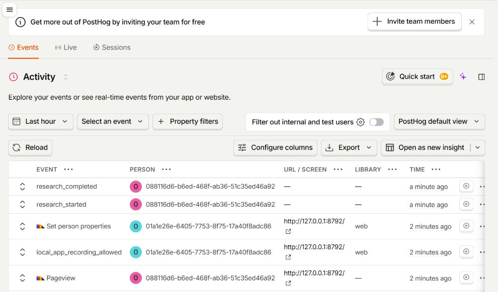
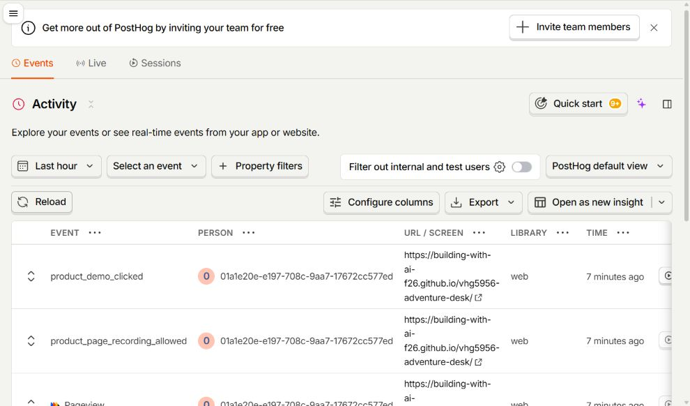
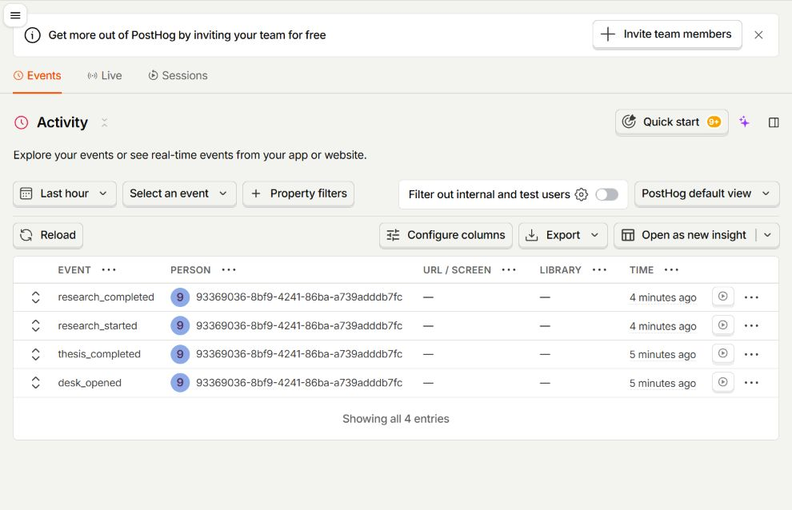
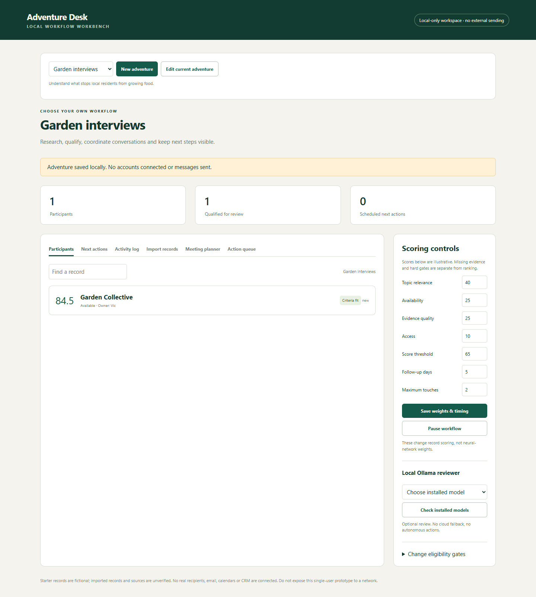
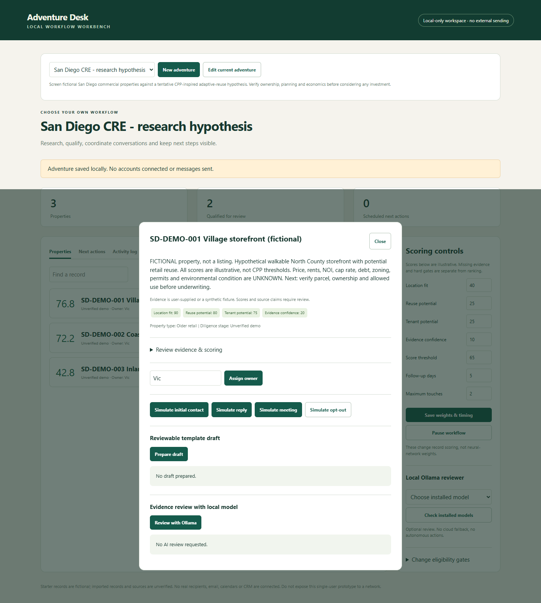

Adventure Desk
Develop an investment thesis and find public-source company prospects, keeping evidence, sale status and financial unknowns clear.
Living PRD · v3 · Build 3
Core workflow
Open the acquisition desk, develop or enter an editable thesis, and choose when to scout. DeepSeek drafts, Gemma tests the draft, and DeepSeek revises it. Research uses bounded company and broker sources, and preserves unknown sale status and unverified financials.
Hosting and storage
The updated desk is live on the existing Geez Group Site. An authenticated worker polls outbound from Vic-PC. Inputs and returned results transit the hosting and database services. All inference runs on the local Ollama models. The new desk stores jobs, worker state, visitor tickets and rate counters in Supabase Postgres. Native row-level security is forced on all five application tables. Current sign-in verifies the existing group password on the Site. The older desk retains its D1 data and can restore already-valid earlier sessions through a read-only compatibility check.
Security and verification
The group password opens the gate and an opaque, revocable credential scopes each session. The browser calls the Site API. Database access is server-scoped, worker claims use a separate credential, and consent gates masked PostHog replay. See the security audit for verified coverage and open checks.
Build 3 log · November 22
What shipped: The latest desk was deployed to the public Geez Site. A browser thesis request ran the three pinned local model passes and returned the draft. The public run took 24.9 minutes of model time. A separate session could not access the job. PostHog accepted a live event and rendered the consented replay. The public desk now displays completed proposal drafts in the conversation. The real advertised-listing scout used ten local model calls in 59.7 minutes of model time. Two results appeared on the site with four exact broker excerpts. Source availability and financial fit remain unconfirmed.
What broke: The old public desk could not reach Vic-PC and expected a legacy worker and model. A successful local Ollama health check did not establish that a public visitor could run it.
What I learned: Verify the whole hosted queue, local claim, exact model pins, and return path. A local thesis took about 23 minutes of model time on CPU. The broker index was reachable. Public operating-company search presented a human check, so its availability remains limited.
Spend and hours: No paid model inference or plan upgrade was added. Estimated marginal cost is $0.01 per run. This estimate excludes existing hardware and subscriptions and is not metered. Total development hours were not tracked.
Living PRD · v2 · Build 2
User and core job
An acquisition researcher starts with an idea, develops or directly enters a thesis, runs local research, and reviews exact public-source evidence before deciding which companies to investigate. All investor fields are optional. A company prospect is not proof of a willing seller or financial fit.
Biggest risk and this build’s test
The biggest risk is that local models produce generic or unsupported recommendations, with latency that makes the workflow impractical. This build tests a narrower real-source workflow: the latest electronics-wholesale run made 11 local-model calls, read three selected primary company pages, and returned three prospects. Two had useful B2B activity descriptions; the third exposed fragmented quotes, fixed with a parser regression check. Gemma identified unsupported size clues and DeepSeek removed them. Recorded model-call time was about 55 minutes, excluding source/network overhead. Quality and latency remain risks; this is a functioning prototype, not a broad accuracy or demand validation.
How the app works
Chrome talks to a localhost Node.js server and SQLite. The server reads bounded public search/company/broker sources and calls existing local Ollama models sequentially: DeepSeek 14.8B does work, Gemma 11.9B supplies diagnostic feedback, and DeepSeek revises. Only admitted source quotes appear on scout cards. Inputs, attempts and results are saved locally. The public Product Page is hosted by GitHub Pages; PostHog receives anonymous action events and only visitor-approved, masked replay. Model inference has no cloud fallback.
Cost per run
Estimated marginal operating cost: $0.01 per run. This is the builder’s estimate, not a metered result. Local model/API token fees are $0; hardware, existing subscriptions and development time are excluded. Electricity has not been measured. Current PostHog use is on the capped free plan; no paid software/API purchase was added for this milestone.
Scope and non-goals
One source-backed scouting action, editable thesis development, saved runs and analytics are in scope. No autonomous outreach, guessed financial underwriting, complete market/property feed, production multi-user security, or model-weight training is claimed.
A completed action with real local AI
Actual localhost evidence from November 14: sign in, enter an electronics-wholesale thesis, run real local models against public listings, inspect the quoted match, and reopen the saved result. This capture predates the latest chat interface and shows the earlier source-preview increment; it is not a fictional property example or a synthetic model response. The latest mixed company/listing workflow also completed separately, with the limitations described above.

Build 2 log · November 15
Progress: real public-source scouting, local writer/critic/refinement flow, editable thesis, saved runs, and separately checked public/local analytics. The earlier Python prototype is preserved. Current focused checks: 22 passing source/workflow/context/privacy checks and 16 passing HTTP/session checks; these are not model-accuracy scores.
Lessons and problems: exact source quotes reduce invented financial claims; independent feedback caught unsupported size clues, but two models do not guarantee correctness. Abbreviation splitting damaged a quote and was repaired. Larger local models remain slow, and the public Product Page needed its own analytics snippet in addition to the local app.
Costs and hours: estimated $0.01/run marginal operating cost; $0 model/API fees; no new software/API purchase recorded. Substantial multi-day development and QA between builds; total hours were not measured. Earlier Build 1’s five-hour estimate is historical and is not reused for this build.

Local-app recording ingestion evidence: the list includes the localhost URL as a separate recording. Input masking and private-region blocking passed focused configuration checks; the very short local QA recording was auto-skipped by the replay player. The separate public-page replay was rendered and inspected. App recording was stopped after testing.

Weekly history: meaningful commits were made on Saturday November 14 and Sunday November 15, outside Tuesday class. No dates or time records were backfilled.
Public Product Page analytics · November 15, 2026
The official PostHog browser snippet is installed in this page’s head using the public project token. Actual published-page $pageview and product_demo_clicked events were received with this GitHub Pages URL and site_surface=product_page. This is separate from the localhost app integration.
Optional session replay was checked with a consented QA visit: PostHog received the recording and displayed this page in its replay viewer. Visitors see the recording notice and choose Allow page recording; they can stop it at any time. Inputs are masked. The local app has a separate optional masked replay control: inputs are masked and private chat, research, proposals and saved-run regions are blocked. Recording is off unless the visitor allows it.

View the consented public-page replay verification screenshot. No private API key or local app data is included in this public snippet or these screenshots.

Local scouting update · November 14, 2026
Core workflow: enter a thesis directly or develop an editable proposal, explicitly accept it, run local research, and inspect quoted public-source evidence. Every investor field is optional. The new Geez module reads company websites and broker advertisements; financial fit and willingness to sell remain unverified.
What changed: local DeepSeek 14.8B work, Gemma 11.9B diagnostic feedback and DeepSeek revision; exact source excerpts; distinct sale-status labels; saved requests; anonymous PostHog funnel events. The earlier next-action prototype is preserved.
Analytics verified: PostHog received desk-opened and research start/completion events from localhost on its capped free plan. No thesis, notes, credentials, company research or session recordings are sent. Blank onboarding QA is not evidence of successful generated research or customer adoption.

Evidence and limits: 20 focused tests and 16 release HTTP checks pass. One real mixed-source run completed with 11 model calls and three prospects; two had useful wholesale-business descriptions. Gemma caught unsupported size clues and DeepSeek removed them. A quote-fragment parser bug was fixed with a regression check. Broad model usefulness and full nonblank browser handoff remain unqualified. This is a functional weekly prototype.
Non-goals: outreach delivery, financial underwriting/guessed revenue, and a complete market or property feed. No new paid software/API purchase was made for this release step; existing subscriptions, hardware and electricity are excluded. Substantial multi-day development and QA; hours were not measured.
San Diego commercial real estate research
Open the Historical Research Desk: acquisition-time evidence, later outcomes, matched baselines and methodology. Unknown dates block reconstruction rather than inventing history.
Use a separate property adventure to explore an acquisition hypothesis inspired by publicly described Commercial Pacific Properties activity. This is a small, selective set of cases, not their complete buying history or a verified investment strategy.
Demo only: all properties below are fictional, not listings or recommendations. No acquisition prices, cap-rate targets, leverage limits, hold periods or return targets have been invented. No offers or messages are sent.

Mobile screenshot · Reproducible demo files

What the sources support, and what they do not
- Firm focus: CPP's services and Kirk Allison biography describe retail/restaurant, redevelopment and North County work. Brokerage work is not proof of principal ownership.
- 505 Oak Avenue, Carlsbad Village: indexed City permit text names 505 Oak Avenue Partners LLC / Vic Gausepohl and describes older 4,275 SF retail. A City permit report and local report on wine and grocery tenants support a renovation/retenanting case. No deed or acquisition economics were reviewed.
- 3060 State Street: a distinct property. Indexed City permit text names JVK FMK Venture I LLC and a 1,358 SF retail-to-restaurant conversion. A secondary company directory associates Kirk Allison as registered agent; an agent role does not establish equity ownership.
Evidence limitations: City PDF endpoints returned access errors during research; the statements above rely on indexed text, not direct document inspection. No deeds, financing records, realized returns or comprehensive acquisition ledger were inspected. Research snapshot: November 9, 2026.
Tentative screening hypothesis
Prioritize investigation of walkable Carlsbad Village / North County locations, older commercial retail with plausible adaptive-reuse potential, and a credible leasing or tenant plan. These are inferred signals, not confirmed CPP buying rules. San Diego-wide applicability remains untested.
Three fit criteria and evidence confidence are shown separately. The current overall score blends them and is only a research-priority aid. It does not replace parcel/ownership verification, zoning and permit review, site inspection, environmental diligence or financial underwriting.

Two-minute demo
- Open the isolated San Diego CRE adventure.
- Compare three fictional property records; explain the fit criteria and low evidence confidence.
- Open SD-DEMO-001 and review unknown financials, ownership and planning requirements.
- Assign a research owner and a local next step. Switch adventures to show existing data is preserved.
Earlier PRD · v1 (November 9)
1. Reachable user and job
Initial user: me, organizing San Diego commercial property research and diligence next steps. The first outside-user test would be with a reachable commercial property researcher; that test has not happened yet.
Before: evidence, outreach status and next steps can become scattered across a list, notes and messages. It is difficult to see who owns a record, what is missing and whether a follow-up should stop. This is the problem hypothesis, not a validated finding from customer interviews.
After: in one sitting, define an objective, import a list, review evidence, assign ownership and see the next safe internal action for every record.
2. One core workflow
Objective → CSV preview/import → evidence and criteria review → owner assignment → next-action queue → reviewable draft or local meeting/next-step plan.
The prototype includes provenance references, unknown scores, duplicate checks, adjustable weights and waiting periods, a pause control and an audit trail. Source references are not fetched or verified automatically. A local Ollama model can summarize selected evidence; it cannot change scores or execute actions.
3. Three explicit non-goals
- Autonomous email sending, real calendar booking or CRM synchronization.
- Automated property discovery, a complete underwriting engine, or a verified replication of a real investor's strategy.
- Production multi-user security, model fine-tuning or automated consequential decisions about people.
4. Architecture and riskiest assumption
Architecture: browser UI → localhost Python server → SQLite per adventure, with an optional local Ollama evidence review. Scoring, stop rules and scheduling checks are deterministic. There is no cloud-model fallback.
Riskiest assumption: a clear next-action queue will reduce coordination effort enough to justify another tool instead of a spreadsheet or existing CRM. This has not been validated.
Next test: ask one reachable organizer to complete a short synthetic list-replay task with their usual method and this prototype. Measure task time, missing-next-step errors and whether they can explain the queue. A proposed success threshold is fewer missed next steps without extra effort; it is not a measured result.
5. Evidence and economics
Build 1 log · November 9
What was built
A local Python/SQLite prototype with isolated adventures, configurable criteria, CSV intake, evidence history, action queues, drafts, local meeting plans and next-step tasks. Optional Ollama inference uses an already installed model. The configurable workflow now showcases San Diego commercial property research. The current CPP-inspired hypothesis is explicitly tentative, and every sample property is fictional.
What I learned with AI
The useful separation is between a model that helps read evidence and deterministic rules that control actions. I used AI-assisted implementation and solo hypothesis-driven verification. Adjustable scoring weights, follow-up waits and neural model weights are different concepts. This prototype changes the first two, not model parameters.
Terminus episodes 1–2 completion and personal reflections are not verified here. No completion claim is being made.
What broke and changed
- Windows tests exposed SQLite connections left open. Explicit connection cleanup fixed the file locks.
- An opt-out could be overwritten by a later reply state. Durable suppression now survives later events and applies to matching entities across adventures.
- Two open evidence forms could overwrite one another. Version checks now reject stale edits.
- Blank or truncated model responses looked successful. The adapter now rejects incomplete results.
- Generalizing labels alone would reinterpret old investment scores. Separate adventure databases and a criterion-change guard preserve their meaning.
Historical-method update
A separate Historical Research Desk now validates dates, excludes later publications from acquisition-time evidence, quarantines unknown dates, and rejects mismatched baseline definitions. It has 21 deterministic checks and a browser-tested synthetic walkthrough. Real historical returns and current market comparisons remain uncomputed; no verified acquisition date or complete underwriting dataset is loaded.
Verification and limits
44 unit/API tests pass. Three headless Edge suites checked intake-to-meeting flow, workflow hardening and a noninvestment adventure from creation through import, draft, switching and reload. Desktop/mobile checks found no page errors or horizontal overflow. Tests use temporary databases and fictional data. No real outreach was sent. Production security, customer demand and broad model accuracy remain unverified.
Actual cost and time
New paid software or API purchases made for this build: none recorded. Existing AI subscriptions, PC hardware and electricity are not included; total spend has not been reconciled.
Time estimate: approximately 5 hours, as my own estimate including idea exploration and research. This is not measured coding time.
Git history: preparation is current work; earlier local development was not recorded as personal Git commits. No backdated commits are being claimed. The course's two-separate-days weekly commit requirement must be assessed against actual history.
Next build
Validate the core flow with an outside user, improve the most confusing steps and establish actual time/cost measurements. The earlier Build 1 had no analytics. Both this public Product Page and the local scouting app now have PostHog integration. The public page tracks pageviews and its demo button, with optional masked recording after visitor consent. The local app has separate anonymous page/action events and explicit optional masked replay.